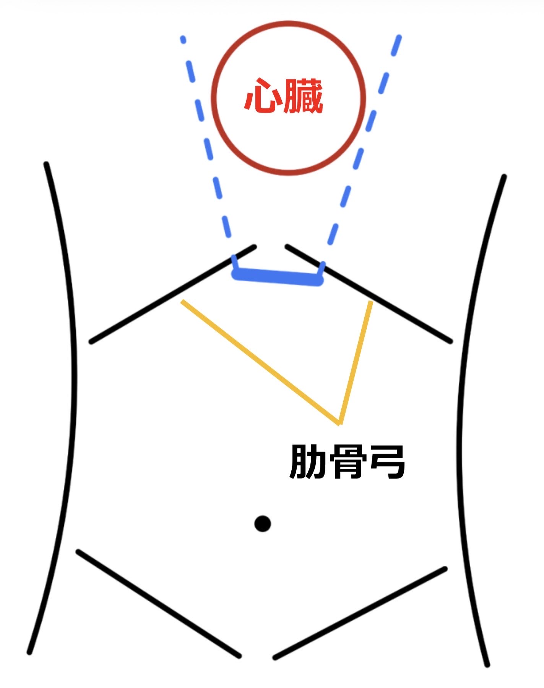
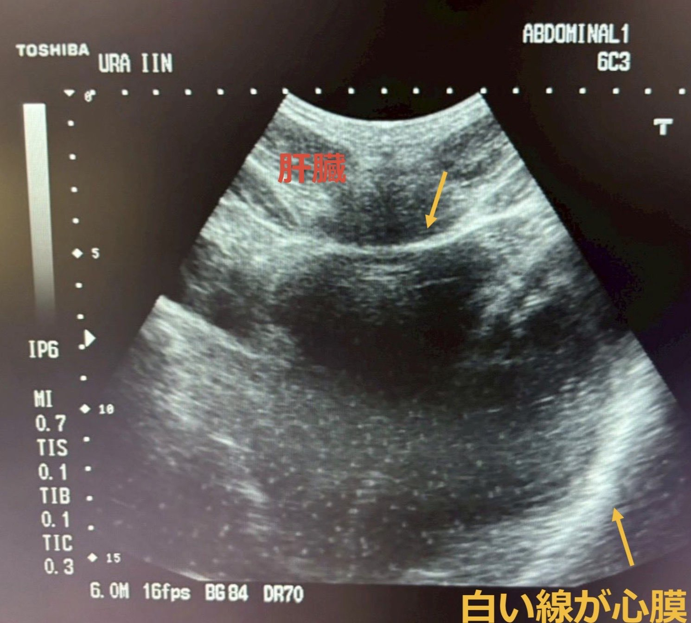
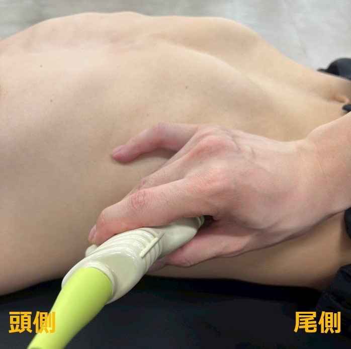
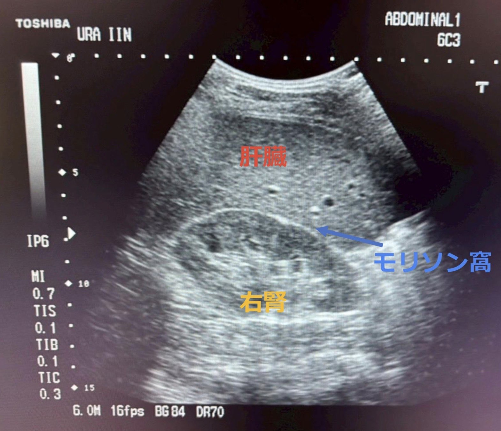
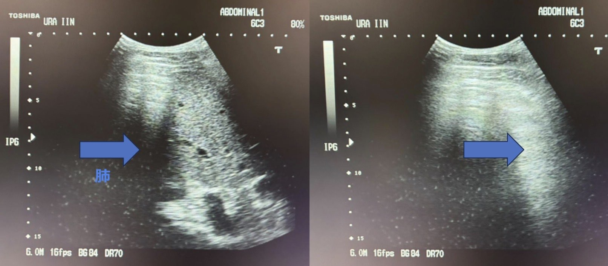
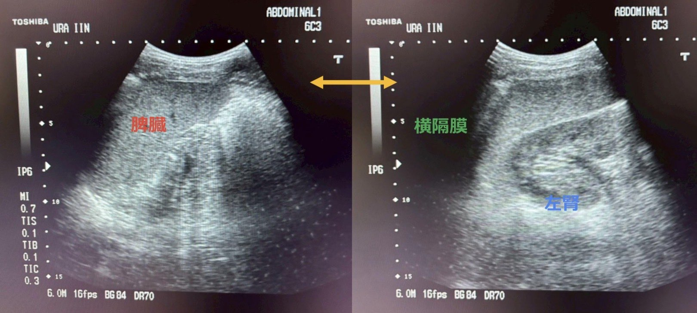

いよいよ本番！
4箇所を当てよう🔬
4箇所を当てよう🔬
FASTは決まった4箇所を順番に当てるだけ。
一緒にやってみよう！
一緒にやってみよう！

🤖 ソノボくん
4つのビューを順番に学ぼう！
タップしてスタート！
タップしてスタート！
① 心窩部
心膜液貯留チェック
② モリソン窩
右側腹部・肝腎境界
③ 脾周囲
左側腹部・脾周囲
④ 骨盤腔
膀胱周囲の液体
🫀 ① 心窩部ビュー

🤖 ソノボくん
まずは「剣状突起のすぐ下」にプローブを当てるよ！プローブの持ち方が大事！
POINT 1
プローブの持ち方

▲ 上からプローブを持つのが正解！
上からプローブを持つ→寝かせやすい
下から持つと指が邪魔でプローブを十分に寝かせられない
プローブを寝かせることでビームが心臓に届く！最初はしっかり寝かせよう。
POINT 2
どこに当てる？

▲ 剣状突起直下・肋骨弓にはめ込む
剣状突起直下：肋骨弓にはめ込むようにプローブを当てる
プローブを寝かせると、ビームが上方の心臓へ届く
POINT 3
心窩部VIEW・評価

▲ 実際のエコー画像：白い線が心膜
画面の下側にバクバク（拍動）しているものが映る→これが心臓！
患者さんに息を吸って止めてもらうと心臓が画面中央に上がってくる
腹が膨らんでプローブが滑りやすい→少し強めに当てておく
見るべきポイント：心膜の外側に黒い帯（液体）がないかを確認！扇動走査で広く観察しよう。
評価が終わったら忘れずに患者さんへ「楽にしてください」と声かけ！
🧠 クイズ：心窩部でプローブを当てる場所は？
🫁 ② モリソン窩（右側腹部）
🤖 ソノボくん
モリソン窩は腹腔内出血が最初に貯まる場所！絶対に押さえよう！
POINT 1
当て方・場所の目安

▲ 右中腋窩線上・剣状突起の高さくらいの肋間
右中腋窩線上で剣状突起の高さくらいの肋間に当てる
小指と薬指は患者さんの体につけてプローブを安定させる
肋間の走行に注意→肋骨は黒い影として映る
プローブを頭尾方向に扇動走査する
患者さんに右手を挙げてもらうと肋間が広がる！
POINT 2
評価・見るポイント

▲ 肝臓・右腎・モリソン窩が見えている
肝腎境界が明瞭に描出されているか
モリソン窩に液体貯留（黒い帯）がないか
右腎が描出されているか確認
忘れずに扇動走査で全体を広く確認
モリソン窩に黒い帯（無エコー域）が見えたら出血の可能性！すぐに上級者へ報告！
🧠 クイズ：モリソン窩の出血のサインは？
🩸 ③ 脾周囲（左側腹部）

🤖 ソノボくん
脾周囲はモリソン窩より背中側！プローブがベッドにつくくらいまで後ろへ。カーテンサインも忘れずに！
POINT 1
当て方・移動方法

▲ プローブがベッドにつくくらい後方へ
モリソン窩からそのまま左の脇腹へ移動
モリソン窩よりやや後方（背中側）に当てる
プローブがベッドにつくくらい！（個人差あり）
背側にいくほど肋骨のカーブがきつくなる
POINT 2
脾周囲VIEW・評価

▲ 扇動走査で脾臓・横隔膜・左腎を確認
脾周囲に液体（黒い帯）がないか確認
＠脾臓と横隔膜の間、脾腎境界
＠脾臓と横隔膜の間、脾腎境界
扇動走査で広く確認する
カーテンサインを確認する（次で説明！）
POINT 3
カーテンサインとは？
プローブを1肋間頭側に上げて息を吸ってもらう→カーテンサインを確認（胸水評価）

▲ カーテンサイン：正常（左）vs 胸水あり（右）
カーテンサインあり：呼吸に伴い肺が横隔膜を越えて動く → 胸水なし（正常）
カーテンサインなし：肺が動かない → 胸水貯留を疑う！
胸腔内に血液が貯まると肺が十分に拡張できず危険！
🧠 クイズ：カーテンサインがない場合、何を疑う？
📍 ④ 骨盤腔ビュー
🤖 ソノボくん
最後は骨盤腔！膀胱の周りに液体がないかチェック。これで4ビュー完了だよ！
POINT 1
骨盤腔ビュー
恥骨上部にプローブを当てる
膀胱は黒い楕円形として映る（尿が入っているため）
膀胱周囲に黒い液体がないかチェック
縦・横の2方向で扇動走査する
膀胱に尿が入っていると見やすい。尿が少ない場合は描出が難しいこともある。
🚧
膀胱直腸窩 / ダグラス窩
実際の手技動画・画像は準備中です
近日公開予定！
近日公開予定！
✅ 4ビュー 確認チェックリスト

🤖 ソノボくん
4ビューをすべて確認できたかチェックしよう！全部チェックできたら君はFASTができる！
🫀 ① 心窩部：心膜に黒い帯がないか確認した
🫁 ② モリソン窩：肝腎境界と出血の有無を確認した
🩸 ③ 脾周囲：脾腎境界と出血の有無を確認した
🪟 ③+ カーテンサインを確認した
📍 ④ 骨盤腔：膀胱周囲の液体を確認した
🗣 各ビュー後に患者さんへ声かけした